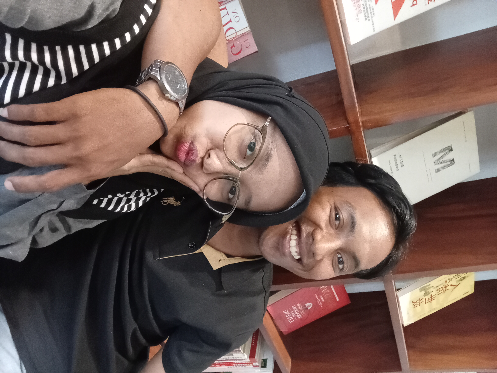
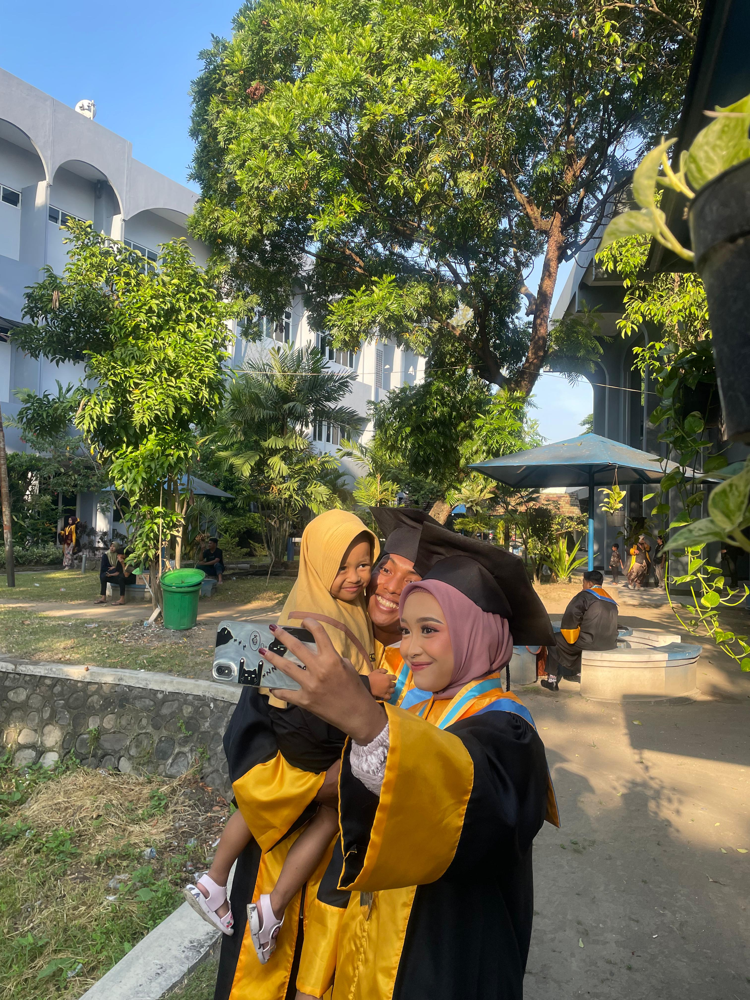
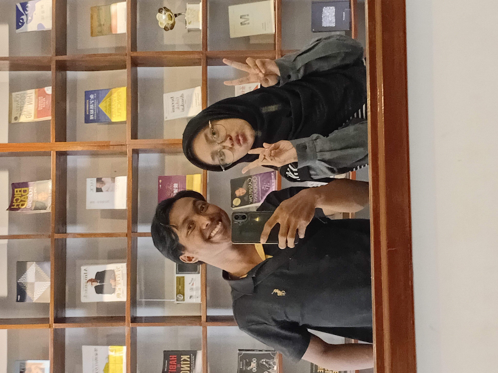
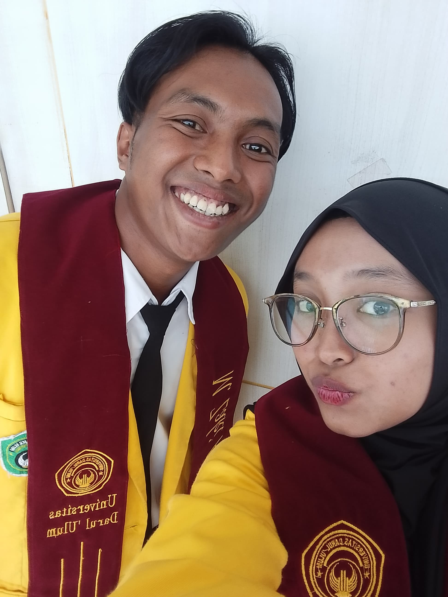
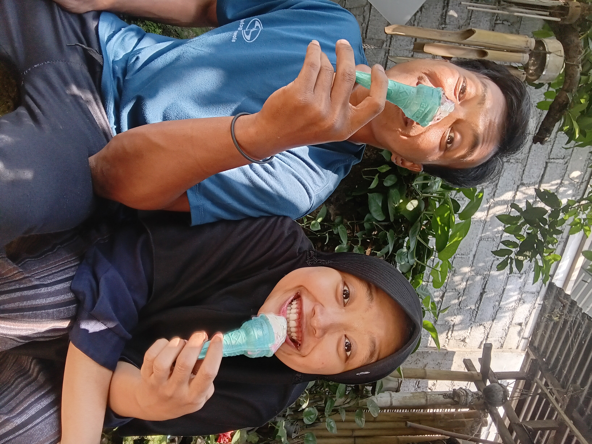
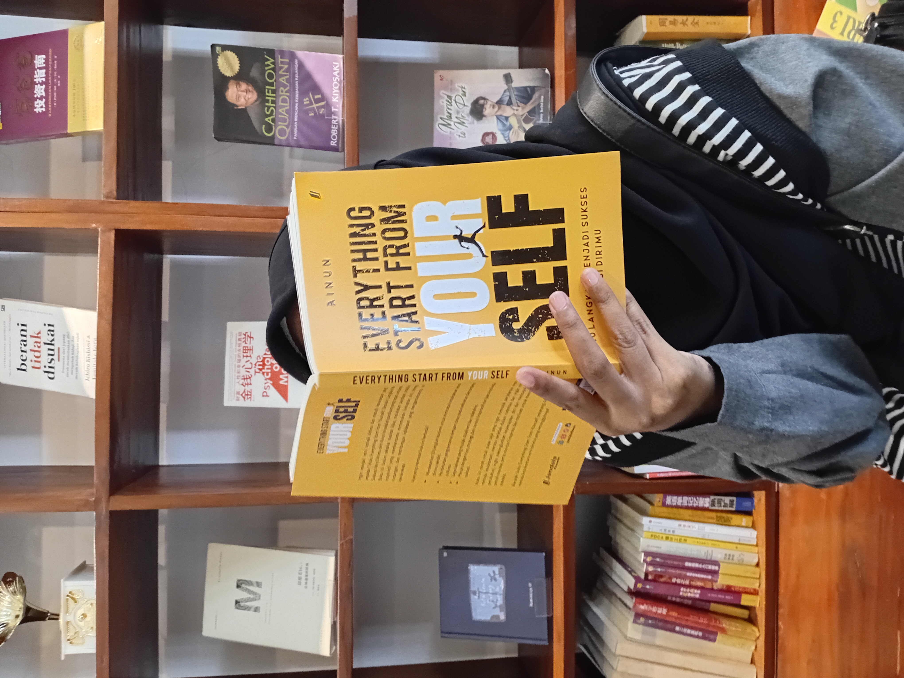
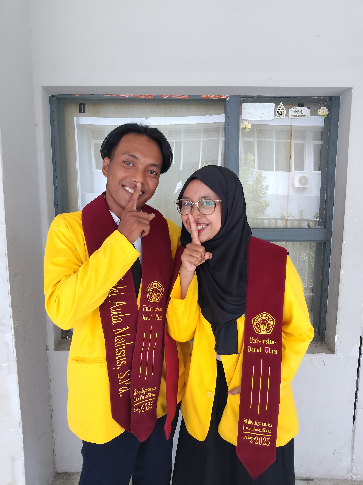

Aku punya sesuatu yang mau aku tanyakan ke bbyy.





Jawab yang jujur ya bbyy... karena cuma 1 pertanyaan saja hehe

Terima kasih bby
karena udah sayang sama aku.
SEMANGAT KERJANYA SAYANGKU.
ohh iyaaa selamat ulang tahun yang ke 24 tahun sayang hehe maaf yaa telat.
selamat atas pencapainnya yaa sayangku. semoga bby selalu menjadi yang terbaik untuk semuanya
terutama untuk hubungan kita dan masa depan kita bby
jangan galak galak yaa kalau jadi guru BK sayangku
— Zaki Sikoala hitam 🖤